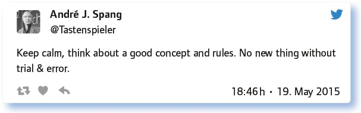

von André J. Spang
Zu diesem Thema muss man nicht viel sagen. Jedem, der mit Schule befasst ist, fällt dazu schnell etwas ein. Seien es nun lange Diskussionen in Gesamtkonferenzen, die sich mit diesem Thema befassen; seien es schnell getroffene Entscheidungen, die meist ein Verbot von Handys in der Schule zur Folge haben.
Das Thema und die damit in der Schule auftretenden Probleme spiegeln zunächst ein Symptom wider, das für eine Entwicklung steht, die anscheinend mit der Schule zunächst nichts zu tun hat: Die Digitalisierung und die verbreitete alltägliche Nutzung digitaler Medien. Doch Handyverbote verhindern nicht, dass selbst in einem smartphonefreien Umfeld die Digitalisierung Auswirkungen hat. Das Internet geht nicht mehr weg – und schülereigene Geräte zur Vernetzung mittels des Internets werden noch selbstverständlicher werden als sie es heute schon sind.
Entsprechend besteht Handlungsbedarf. Doch die Bandbreite des Umgangs mit dem „Problem“ ist so groß, dass eine Linie kaum erkennbar ist, die allgemein verfolgt würde. Die Entscheidungen liegen in den meisten Fällen bei den einzelnen Lehrpersonen.
Die eigentlich spannende Frage aber ist die Frage nach dem didaktisch sinnvollen Umgang mit allen zur Verfügung stehenden Mitteln in der Schule. Und da gibt es nicht nur Kreidetafeln in nahezu jedem Klassenzimmer, sondern da sind auch die Smartphones in vielen Schülertaschen.
Hat man sich als Lehrperson erst einmal entschieden, die Smartphones im Unterricht zu nutzen, steht man schnell vor den nächsten Fragen: Wie ist das mit dem Internetzugang? Gibt es WLAN an der Schule oder greift man auf das eventuell (noch) vorhandene Minutenbudget der Schüler zu, erwartend, dass dieses für schulische Zwecke verfügbar ist? Welche Apps empfehle ich und wie kann ich dabei mit der Frage umgehen, dass es unterschiedliche Plattformen auf der Betriebssystemebene gibt, für die unterschiedliche Programme existieren, die vielleicht das Gleiche können?
Das ist aufwendig! Lehrpersonen kommen kaum umhin, sich diesen Fragen zu stellen. Diese Fragen aber werden durch Verbote, die durchaus begründet werden können, überstrahlt und letztlich ausgeblendet. An die Stelle der konzeptionellen Weiterentwicklung der eigenen Fachdidaktik tritt die Abwehrreaktion.
Diese Ausgabe des #EDchatDE zeigt, wie Lehrpersonen mit solchen Fragen umgehen, reflektiert, ob Handys in Schülertaschen das einzig „Gefährliche“ sind, das Schüler mitführen und stellt natürlich die Frage, wie das weitergeht, wenn nun Computeruhren und andere „Wearables“ auf den Markt kommen.
Und was sagt die #EDchatDE-Community zum Thema Handyverbot?
Handyverbot an der Schule? Wie weit geht das bei dir, wie wird begründet, welche Sanktionen gibt es?
Wie man hier liest, ist es von Schule zu Schule, teilweise sogar von Klasse zu Klasse und Bundesland zu Bundesland sehr unterschiedlich – macht das einen Sinn? Sogar innerhalb der Kollegien wird das Handyverbot „differenziert“ behandelt …
Bei uns müssen Handys im Unterricht aus sein, außer der Lehrer erlaubt die Benutzung. Sanktionen? Keine Ahnung.
Potenzielle Möglichkeit zu Cyberverbrechen: z. B. Mobbing-Videos, Verletzung von Persönlichkeitsrechten …
Lehrer gehen unterschiedlich damit um, wenn ein Schüler mit Handy erwischt wird.
Laut Hausordnung ist die Handynutzung in den Pausen im Gebäude untersagt. Im Unterricht pädagogisch begründet möglich.
Die pädagogisch begründete Handynutzung schafft dummerweise Isolation.
Handyverbote werden an Schulen in Duisburg und am Niederrhein abgeschafft. Regeln bleiben – und werden wichtiger.
SuS dürfen die Smartphones nicht einschalten. Smartphones werden sonst abgenommen. So ist das in Bayern.
Es wird sogar nach Schülern differenziert: Erlaubt für S2, verboten für S1. LuL dürfen wegnehmen, Rückgabe nach der Schule. Im Unterricht sind Handys erlaubt, wenn LuL es freigeben.
Begründung für Handyverbot: Hohes Ablenkungspotenzial und nicht fürs Lernen gedacht. Meiner Meinung nach zeigt das nur die Angst, etwas nicht beherrschen zu können.
Insel der Seligen: Bei uns gibt es kein Handyverbot, es muss aber während des Unterrichts stumm geschaltet werden und in der Schultasche sein.
Es gibt ein „Gebot“ in der Schulordnung … sie auszuschalten. De facto ist die Nutzung im Unterricht aber erlaubt.
Bei uns eigentlich ganz liberal, die einzelne Lehrperson entscheidet, und das ist gut so.
Im Unterricht gilt bei uns ganz klar, dass der Lehrer das Sagen hat, auch in Sachen Handygebrauch oder -verbot.
Mal ehrlich: Was alles in den Schultaschen der Kinder kann gefährlich werden und muss verboten werden?
Taschenmesser, Nagelfeilen …
Der Klassiker: Der spitze Bleistift – der gehört verboten! https://t.co/FYYX3ZgXM3
Honest answer: We don’t really know. There might be all sorts of dangerous things, but schoolbags aren’t checked.
Ich musste eine Soft-Gun konfiszieren. Handys wurden mir von manchen Lehrer/innen geliefert.
Verbieten gehört verboten.
Mal ehrlich: Wenn das Handy „verboten“ ist, wird eben unter dem Tisch gefilmt, oder?
Dicke Bücher – die bringen nämlich Rückenschmerzen. Ersatz durch eBooks!
Laser pointers are risky. Have already led to injuries of students.
Wir lassen sie Holz mit Sägen und Stemmeisen bearbeiten und in der Schulküche Tomaten mit großen Messern.
Alles, was attraktiver und verlockender ist als mein Unterricht. :-)
Da braucht es nix aus der Schultasche, da reichen, die angewachsenen Fäuste.
Handyverbote: Umsetzbar oder Feigenblatt, um keine Medienerziehung betreiben zu müssen?
Hier gehen die Meinungen auseinander. Auf der einen Seite wird geschildert, dass es schwierig ist, ein Handyverbot an der Schule durchzusetzen, wenn sie in der Schule erlaubt sind. Andererseits wird auch auf die Möglichkeit hingewiesen, Handys im Unterricht einzusetzen, um eine verantwortungsvolle Nutzung zu vermitteln.
Warum nicht auch S. in die Verantwortung nehmen, indem diese Konzepte zum Handygebrauch in der Schule erstellen?
In berufsbildenden Schulen ist das weder umsetzbar noch notwendig. Know how der Schüler/innen nutzen!
Umsetzbar eigentlich nur konsequent, wenn sie am Schultor eingezogen werden …
Feigenblatt. Umsetzbar nur, wenn die Handys überhaupt nicht mitgebracht werden dürfen.
Ja. Der (verzweifelte) Versuch, die Wirklichkeit draußen zu halten.
Da manchmal ungenügende Konzepte vorhanden sind für den sinnvollen Einsatz im Unterricht, wurde die Handynutzung dann lieber verboten.
Was ich dazu zu sagen habe, steht u. a. hier (aber vielleicht erst nach dem #EDchatDE lesen, ist etwas länger): http://t.co/EnQiClR04r
Wir alle müssen mit dem „Handywahn“ umgehen lernen. Erwachsene/Eltern müssen Vorbild sein, verantwortungsvolle Nutzung zu lernen.
Finde eh nicht, dass Handyverbot oder Medienerziehung sich ausschließen. Das wird oft so verkauft, von beiden Seiten.
In practice, „ban on mobiles“ often means: Don’t use mobiles except for research in lessons. Would be sensible to change label.
Die Kinder sind doch nur abgelenkt mit diesem WhatsApp und so … Was ist zu tun?
Hier kamen verschiedene Vorschläge, das Handy sinnvoll in den Unterricht einzubinden, damit es sinnvoll und nicht heimlich genutzt wird. Dafür muss es klare Regeln geben.
Thematisieren. Gemeinsam Regeln festlegen. Diese Energie bündeln und nutzen, vielleicht mit Wikis, Moodle, Blogs …
Kinder lassen sich ablenken. Dafür braucht es kein WhatsApp. Klare Regeln und ein Bewusstsein für Mediennutzung können helfen.
Unserer Erfahrung nach: Je mehr das Handy zum Lernen dient, desto weniger führt das Handy zur Ablenkung.
Handys im Unterricht benutzen. Ein Verbot hält viele nicht von heimlicher Nutzung ab.
Klare Arbeitsaufträge erteilen (Individualisierung). Manchmal Smartphone ausstellen und Online-Tools nutzen lassen.
Medienerziehung. Medienerziehung. Medienerziehung. | Fantasie | didaktische Reflexionsfähigkeit.
Etwas Nützliches und Motivierendes machen (lassen). Wo fällt ihnen nicht einmal ein, WhatsApp zu benutzen?
Dann halt WhatsApp für den Unterricht dienstbar machen.
Eine Menge ist zu tun. Man muss Regeln haben, an die sich alle halten. Kein Handy heißt auch, dass die Lehrperson nicht aufs Handy starrt (z. B. Uhr). Konstruktive Nutzung ist wichtig und klare Nutzungszeiten.
Das Problem an WhatsApp ist nicht die bloße „Ablenkung“. Es geht um Druck, Umgangsformen und, ja, Mobbing.
Antworte auf 3 Tweets unterschiedlicher Teilgeberinnen a) zustimmend, b) kritisch, c) provozierend!
Habt ihr positive Szenarien eines selbstbestimmten, verantwortungsvollen Umgangs mit Handys in der Schule (im und außerhalb des Unterrichts)?
Hier wurde auf die Nutzung verschiedener Handyfunktionen verwiesen, z. B. des Internets für Rechercheaufgaben sowie der Kamera oder des Taschenrechners. Aber auch die Nutzung von Handytools, eBooks, Dokumentationen wurde beschrieben. Dadurch wird deutlich, welche vielfältigen Nutzungsmöglichkeiten es gibt und schon eingesetzt werden.
Schau mal beim School-IT BYOD Projekt Rhein-Waal: http://t.co/5eTYp3d4oJvia@richard_he.
Do things students only can do with a digital device. For example: Write a blog: https://t.co/EQLWgZOc6N
I’m still impressed with the reports about Projektschule Goldau (Switzerland): http://t.co/zSSn058TIC
Hochwertiger Ersatz für Taschenrechner (CAS). Individualisierung des Unterrichts. Mentoring!
Man stellt eine komplexe Aufgabe, die SuS wählen selbstbestimmt aus, ob Lehrer, Buch oder Google weiterhelfen soll.
Sensoren im Physikunterricht, Kamera ganz allgemein, Taschenrechner Mathematik, sehr offene Aufgaben zur Recherche …
Habe z. B. Vokabeln nachschlagen lassen (1 Schüler/in als Vokabelwächter/in).
Schnell einsetzbare Tools nutzen, die mit dem Handy etwas bringen: LapTeacher Toolbox http://t.co/kayzkxuogs
Mathe: Dynamische Geometrie, CAS; Sport: Bewegungsanalyse, andere Fächer: eBooks, Dokumentationen.
We are in our mobiles right now doing great learning. Can model this in class.
Dokumentation von Projekttagen, Gruppen für ein Wiki. Lernen: Recht am eigenen Bild und Empathie für ungünstige Situationen.
Handyverbote sind erst der Anfang. Jetzt kommen die Wearables. Und was werden die Schulen und Pädagogen tun? Prognosen bitte.
Wearables habe ich noch gar nicht gekannt. Sind das neue Angstmacher?
Und dann werden die Wearables auch verboten, bis man endlich versteht, dass man Lern- und Prüfungsszenarien ändern muss.
Vielleicht werden irgendwann die Fragen so gestellt, dass ich sie eben nicht im Internet finde …
Wie @beatdoebeli heute getwittert hat: Es gibt ein Uhrenverbot bei Prüfungen an der Uni Bern: https://t.co/ca2UezKPl5
Verbieten, kontrollieren, schimpfen, jammern. Smartphoneverbot für Schulen könnte das Kondomverbot der Kirche werden :-(.
Welche Anregungen, Fragen hast du sonst noch zum Thema?
Dieser letzte Tweet könnte auch ein gutes Schlusswort sein:

An der Diskussion merkt man, dass Verbote keinen wirklichen didaktischen Mehrwert und schon gar keine „Lösung des Problems“ bieten.
Vor allem gab es viele gute Ideen und Impulse, was man mit Smartphones im Unterricht konstruktiv anfangen kann. Und dann ist es eben einfach wichtig, sich mit den Schülern über eine geregelte Nutzung auseinander zu setzen und die so gefundenen Regeln auch einzuhalten – und zwar durch alle.
Um in dieses Thema etwas vertieft einzutauchen, hier drei Lektürempfehlungen:
Das Thema ist auch ein rechtliches Thema. Hier also ein FAQ zu Rechtsfragen: https://irights.info/artikel/faq-handys-schule-was-ist-erlaubt/24289
Ein Artikel aus der SZ über eine Schule ohne Handyverbot: http://www.sueddeutsche.de/bildung/handys-in-der-schule-tippen-ohne-tabu-1.1703992
Ein paar Klassiker der „Meinungsbildung“ aus dem SPON: http://www.spiegel.de/lebenundlernen/schule/handy-verbot-an-schulen-sollen-schueler-smartphones-mitbringen-duerfen-a-984379.html
Link zum vollständigen Protokoll: